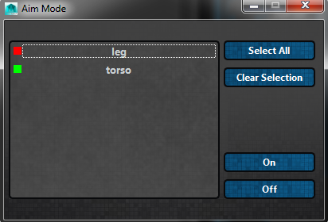

ART_AimModeUI¶
Author: Jeremy Ernst
-
class
Interfaces.ART_AimModeUI.ART_AimMode(mainUI)[source]¶ This class creates a tool that allows a rigger to toggle aim mode for a given selection of modules. Aim mode ensures that the parent joints in a joint mover are always aiming at their children.
- This tool can be called from the toolbar on the Rig Creator UI from the following button:
- The full interface looks like this:
- 
-
__init__(mainUI)[source]¶ Instantiates the class, getting the QSettings for the tool, and building the Aim Mode interface.
Parameters: mainUI – The instance of the Rig Creator UI this tool was called from.